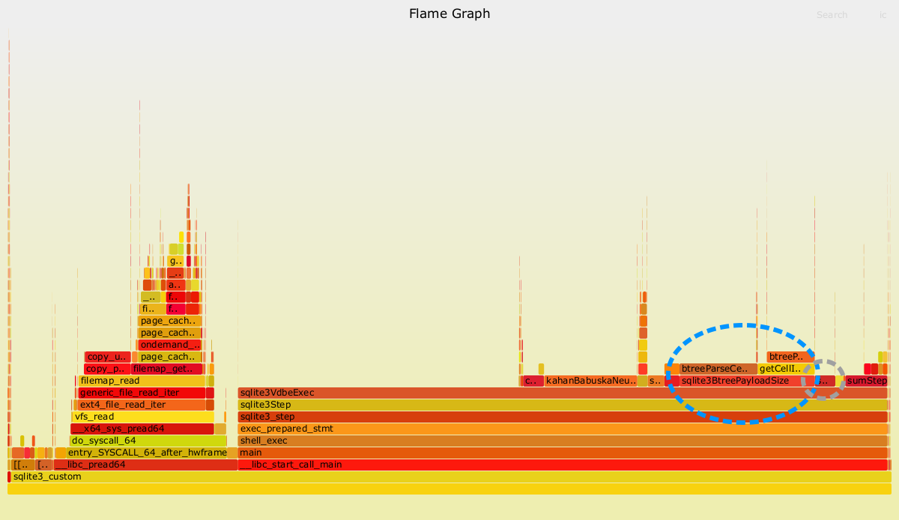
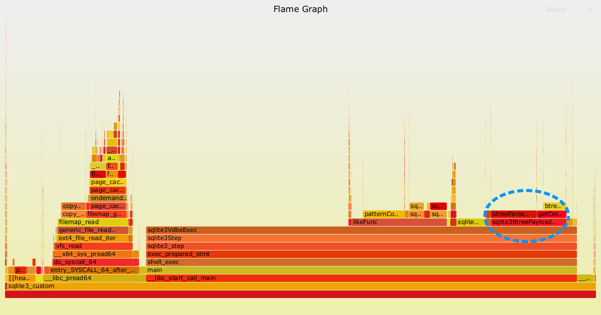
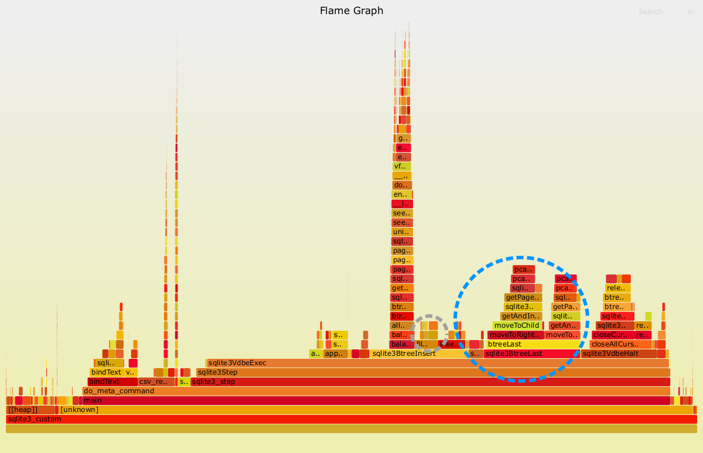

Trade-offs#
Some experimentation with SQLite and variable-length integer encoding
Variable-length integer encoding#
I often find myself drawn to content discussing trade-offs behind some program design. Recently I’ve been reading about the design decisions behind the Apache Arrow Flight framework, and also behind the file format for SQLite.
What I found interesting about Flight is that it offers the possibility of almost no serialization costs - data is sent directly over the wire in the native Arrow format, and it’s only the comparatively small metadata that is serialized via the Protocol Buffer format. There is a trade-off here between increased network costs and reduced CPU costs.
Protocol Buffers were actually designed with the opposite trade-offs in mind. They use a variable-length integer (or ‘varint’) encoding for integers. This results in less data to transfer over the network, but at the cost of extra CPU work at both ends of the network connection. Interestingly, this decision was reversed for the Cap’n Proto format (a successor to the Protocol Buffer format), as the author considered the trade-off to no longer be desirable.
SQLite uses a varint encoding for its own file format. SQLite is widely used across embedded devices, and so storage costs are also an important consideration in this design decision. However, most of my projects with SQLite don’t take place on systems where storage is at such a premium, and I was interested in getting a rough idea about what sort of trade-offs might be involved for my own use-cases.
🚨 Warning: What follows is a brief and somewhat naive analysis of varint encoding costs in SQLite. Please take it with a healthy pinch of salt! 🚨
Experimentation setup#
In the interests of time, I adapted a variation of some old profiling material from the SQLite website:
Data#
In my adaptation there were 2 tables, each with ten million rows:
Table 1 |
Table 2 |
||||||||||||||||||||
|---|---|---|---|---|---|---|---|---|---|---|---|---|---|---|---|---|---|---|---|---|---|
|
|
Most real-world data is not uniformly distributed. I selected my random integers using the following empirical distribution:
1 byte integer ~ 90% of values
2 byte integer ~ 5% of values
3 byte integer ~ 3% of values
4 byte integer ~ 1% of values
6 byte integer ~ 0.75% of values
8 byte integer ~ 0.25% of values
For the data in Table 2, I selected 1000 random words from /usr/share/dict/words and then sampled from them uniformly.
Test cases#
I had six test cases. Test cases 1 - 4 involved reading from disk and closely followed the test cases outlined on the SQLite website (but note the fairly arbitrary cut-off value for test case 3):
test case 1:
SELECT count(*),avg(RandomInteger) FROM table1;test case 2:
SELECT count(*),avg(RandomInteger) FROM table2;test case 3:
SELECT count(*),avg(RandomInteger) FROM table2 WHERE RandomInteger>63;test case 4:
SELECT count(*),avg(RandomInteger) FROM table2 WHERE RandomWord LIKE 'squalid';
Test cases 5 - 6 involved reading and writing to disk. They were a mix of the test cases on the SQLite website, and a personal desire to also import the data from pre-populated CSV files (which is still a pattern that occurs quite frequently for me):
test case 5:
.import table1.csv table1 --csvtest case 6:
.import table2.csv table2 --csv
Both of these cases were run after initially creating the schema in the relevant database file e.g. CREATE TABLE table2 ("RandomInteger" INTEGER, "RandomWord" TEXT);.
Tools#
My personal machine is Linux-based and I used time, perf and the Flamegraph Visualiser for the analysis. There was a version of sqlite3 available from the apt package manager and I started with this. Unfortunately, I soon discovered that it had had its symbol table stripped (objdump --syms) and was of limited use for my analysis with perf. Instead, I pulled the latest version (3.44.0) of sqlite3 and built it on my local machine with the default settings. After some brief experimentation, I settled on the following for gathering a profile of my test cases: perf record -F 5000 --call-graph dwarf -o perf.data bash <MY_BASH_SCRIPT>.
(Note: Unprivileged users made need to play with the perf_event_paranoid setting if possible.)
Experimentation results#
What quickly became apparent was that reading from disk into the SQLite page cache was a non-negligible cost. On reflection, this was to be expected. I have split the results into those with a cold cache and those with a warm cache to account for this cost. I used the sync command along with writing to /proc/sys/vm/drop_caches to clear the system cache.
A SQLite implementation detail relevant to the results is that data is not decoded when it is moved to the page cache - it remains in its original disk format in the cache (see the xRead() method for further details). This means that even though the warm cache results may take less time, they still include the costs of decoding the varints.
Test cases 1 - 4#
5% and 95% confidence intervals (seconds)
Test Case |
Cold |
Warm |
|---|---|---|
1 |
(0.7, 0.8) |
(0.5, 0.6) |
2 |
(0.9, 1.0) |
(0.6, 0.7) |
3 |
(0.6, 0.8) |
(0.6, 0.7) |
4 |
(0.7, 0.8) |
(0.5, 0.6) |
All of the flame graphs shared a similar overall appearance. I’ve only included two to highlight the most important details.
Test case 2 (cold)#
{kind=link}
The two dashed oval regions indicate the costs most easily attributable to decoding the varints in test case 2 (cold cache).
The stack trace on the left hand side (starting with __libc_pread64) represents the impact of loading the data from disk into the page cache. The stack trace on the right (starting with __libc_start_call_main) is the relevant part for this analysis.
SQLite works by translating SQL statements into bytecode and then running that bytecode on a virtual machine (like CPython). Presumably the long section at the beginning of the strack trace (sqlite3VdbeExec) is related to the initial setup of this virtual machine. Moving further to the right, there are two methods that can be linked to the choice of using a varint encoding. The most easily understood of these is sqlite3VdbeSerialGet. It is highlighted by the smaller oval region. This method contains the logic that decodes a varint to an actual integer in memory. It was consistently between 1-2% of the overall time in my experiments. Unless you are a true power user of SQLite, I think it is unlikely that you will notice the impact of this method.
The second method that can be linked to the choice of using varints is sqlite3BtreePayloadSize. It is highlighted by the larger dashed oval region. SQLite uses a variation of a b-tree data structure to efficiently traverse the contents of a table. The size of each leaf node of this b-tree is not known in advance, partially as a result of the use of varints. For example, even if a column is defined as an INTEGER from the schema, there is no way of knowing whether a particular row will be a 1- or 8-byte integer (for example) without inspecting the row. This inspection is performed by sqlite3BtreePayloadSize.
Clean attribution is complicated by the fact that other data types that vary in size (for example TEXT) may also require this method, as well as the b-tree algorithm itself. Test case 1 does make the attribution a bit cleaner, as there are only two integer columns involved. For test case 1, this method was consistently between 10-15% of overall time in my experiments.
Test case 3 (cold)#
{kind=link}
The dashed oval region indicates the costs most easily attributable to decoding the varints in test case 3 (cold cache).
The profile from test case 3 looks very similar to test case 2. The main reason I included it was to highlight that the direct cost of decoding the varints (sqlite3VdbeSerialGet) is no longer visible, likely as a result of the sampling frequency I used for perf being too coarse. Another way of saying this is that the cost of this method is negligible in test case 3.
The stack trace attached to sqlite3BtreePayloadSize is again clearly visible in test case 3. The attribution is less clean, because it is also required for decoding the random words (TEXT data types also use a variable-length encoding in SQLite). So, for test case 3 it is likely more correct to say that 10-15% of the costs are closely related to the variable-length encoding in general, rather than to the variable-length integer encoding specifically.
Test cases 5 - 6#
5% and 95% confidence intervals (seconds)
Test Case |
Cold |
Warm |
|---|---|---|
5 |
(4.0, 4.5) |
(4.2, 4.8) |
6 |
(5.4, 5.7) |
(5.5, 5.8) |
The first result was that everything was slower if I didn’t clear the cache. I have no explanation for this, and I didn’t spend time looking into it. Both flame graphs shared a similar appearance and so I included only a single graph here.
{kind=link}
The two dashed oval regions indicate the costs most easily attributable to encoding the varints in test case 5 (cold cache).
As before, the smaller dashed oval region indicates costs that are directly attributable to the varint encoding process. These costs were consistently 1-2% of the overall time, similar to the earlier decoding costs.
The larger dashed oval region is again more difficult to directly attribute to the choice of varint encoding. The method indicated by this region (sqlite3BTreeLast) is linked to adding a new row to a table. It’s partially needed because each integer (and hence row) can have a different size, and so it’s not possible to determine the location where each row ends without explicitly reading the data. As for the earlier test cases, it’s likely more correct to say that the choice of variable-length encoding is an important driver of costs, rather than the sole cause. The total costs for this method are between 10-12% of total run time.
Compression#
Even though I do not regularly run into storage costs as a major limiter for my work, it’s interesting to have a quick check of the benefits that varint encoding can offer. The total size of Table 1 on disk is roughly 95MB and the total size of Table 2 184 MB. For a 64-bit signed integer data type, we would expect Table 1 to occupy roughly 160MB. If we assume each word is at most 20 characters and we use a fixed-size layout for representing text, then we would expect Table 2 to occupy 360MB. For the test cases, SQLite offers up to a 50% reduction in storage costs over a naive implementation using fixed-size data types.
A more sophisticated analysis is to compare against Parquet, which is a ubiquitous data file format these days. A quick check (using pandas) shows that an uncompressed Parquet version of Table 1 is roughly 105MB, and that an uncompressed Parquet version of Table 2 is roughly 120MB. This shows that Table 2 can actually be stored far more compactly with the Parquet format than the SQLite format!
These differences in the disk size of Table 2 can ultimately be traced back to another design decision - the choice of row vs columnar format. SQLite is primarily designed for fast online transaction processing (OLTP) and hence uses row format, whereas Parquet is designed for fast online analytical processing (OLAP) and so uses column format.
Final thoughts#
There are three primary factors to consider when using a variable-length integer encoding:
Decoding speed
Encoding speed
Compression ratio (for the relevant distribution of integers)
For the test cases that I considered, up to 15% of the total runtime of SQLite can be linked to the choice of variable-length encodings. Costs linked to variable-length integer encodings specifically are more modest, but can potentially approach 15% depending on the use-case. On the other hand, storage savings linked to the choice of variable-length integer encodings are considerable - there can be up to a 50% decrease over a fixed-size data type encoding.
Perhaps surprisingly given that SQLite was designed with compression in mind, it can produce tables that are larger on disk than formats like Parquet. This can be traced to another design decision - SQLite’s primary focus is fast OLTP.
My take-home message: don’t cargo-cult, and always consider the trade-offs for your use-case!